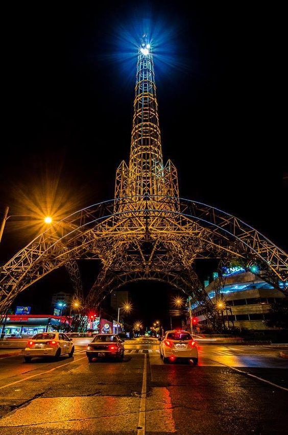

Torre del Reformador
Sin duda alguna, la Torre del Reformador es un ícono dentro de la cultura guatemalteca,sobre todo,
en la Ciudad de Guatemala. Su historia se remonta a hace más de 80 años.
Incluso, es un símbolo de identidad para el país como la Torre Eiffel en Francia —con la que tiene gran parecido—.
La Torre del Reformador se construyó con el fin de que estuviera lista para conmemorar
el centenario de Justo Rufino Barrios. Fue así que fue inaugurada el
19 de julio del año 1935 —durante el gobierno de Jorge Ubico—.
En ese entonces, la construcción fue nombrada como “Torre Conmemorativa del 19 de julio“.
Se sabe que parte de su dedicación a Barrios fue porque él era conocido como El Reformador,
debido a los logros que hizo durante su gobierno en aspectos económicos,
religiosos y sociales que realizó en el país.
Por otra parte, se decidió que esta estructura metálica de 75 metros de altura fuera colocada en el
cruce del Bulevard 15 de Septiembre (actualmente 7a. avenida Sur prolongación),
Calle de Tívoli y Calle General Miguel García Granados, de la Zona 9 capitalina.
Para ello, varios mecánicos expertos estuvieron involucrados en armar la torre.
Mientras que un equipo guatemalteco se encargó de revisar los planes para su instalación,
cimientos y drenajes. Así mismo, tuvo una red de iluminación de 4 reflectores grandes en cada base.
Posteriormente, la silueta fue iluminada con gas neón y en su cúspide se instaló otro reflector.
Esto debido a que por solicitud del general Ubico, se pretendía
que la luz proyectara al cielo los colores nacionales.
No obstante, eso no se logró y solo se veía el color blanco.
Además, se sabe que las piezas son de hierro galvanizado y fueron traídas desde Estados Unidos.
Por lo que en una de placa al pie de la obra hay un texto que dice
“United States Steel Products Company, Usa 1935”.
El costo total de la adquisición de la torre tuvo un costo que superó los Q.49,000.00.
Después de esto, el gobierno de Bélgica donó una campana que se colocó en la parte alta de la torre,
la cual por su posición emitía un sonido fuerte. Sin embargo, en 1986
se volvió a colocar otro faro para auxilio de la navegación hacia el Aeropuerto Internacional La Aurora.
Luego de su inauguración,
esta obra era vista con asombro por la sociedad guatemalteca debido a que sobresalía
y se destacaba del entorno urbano de la época, sin embargo pronto pasó a ser uno de los elementos
más representativos de la Ciudad de Guatemala.
